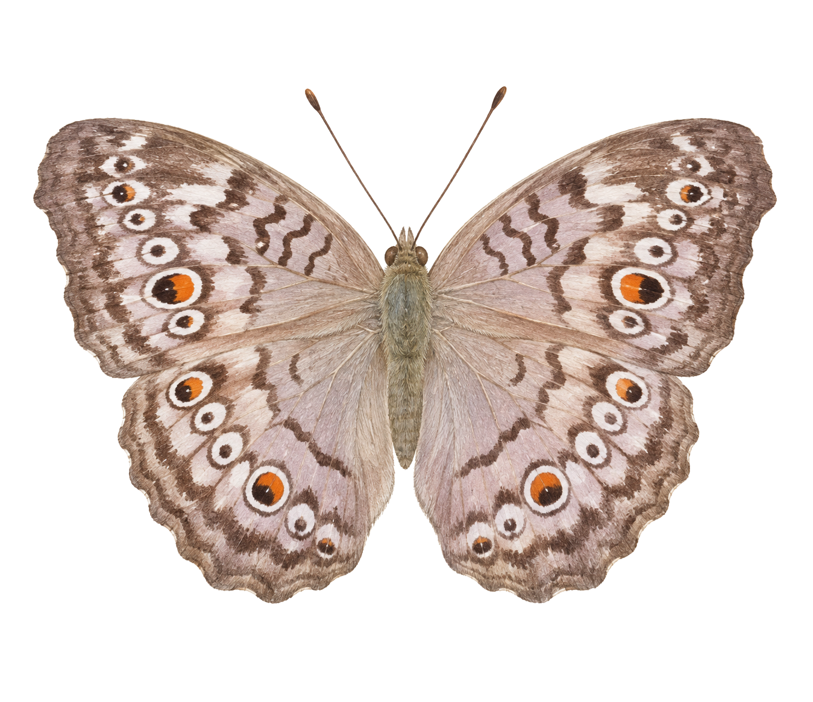

タテハチョウ類 · 098 / 165
ハイイロタテハモドキ
Junonia atlites

特徴・見分け方
淡い灰褐色の翅に、大小の眼状紋が列状に並ぶ。
雌雄の違い
雌は翅の褐色斑や裏面の色が雄より濃い傾向。
大きさ
開張（翅を開いた幅）60–65 mm。香港政府の都市公園ガイドの値で、沖縄産の測定範囲ではない。地域・亜種・資料による違いがある。
沖縄の島別記録
記録のある島：石垣島、西表島、与那国島、黒島。記録島の抜粋で、すべての記録地を列挙したものではない。
生息環境
湿地、河川周辺、湿った草地。一般的な生息環境であり、県内の定着を示す情報ではない。
生態・識別上の補足
飛来や一時発生の記録を含む。掲載島は記録地点であり、現在の定着を意味しない。
幼虫・食草
ツルノゲイトウ、オオバコ、イワダレソウなどが資料に挙がる。
参照元・参考資料
- 日本の蝶：形態・雌雄差
資料内の参照日: 2026-11-10 - 沖縄蝶類生態図鑑：ハイイロタテハモドキ
資料内の参照日: 2026-11-10 - 大きさの追加出典：香港政府の都市公園ガイド
資料内の参照日: 2026-11-10
掲載内容は提供データ（2026年11月10日更新）に基づきます。記録島は現在の定着や観察の容易さを保証しません。イラストは参考表現で、同定には実物の形態と参照資料を併せて確認してください。